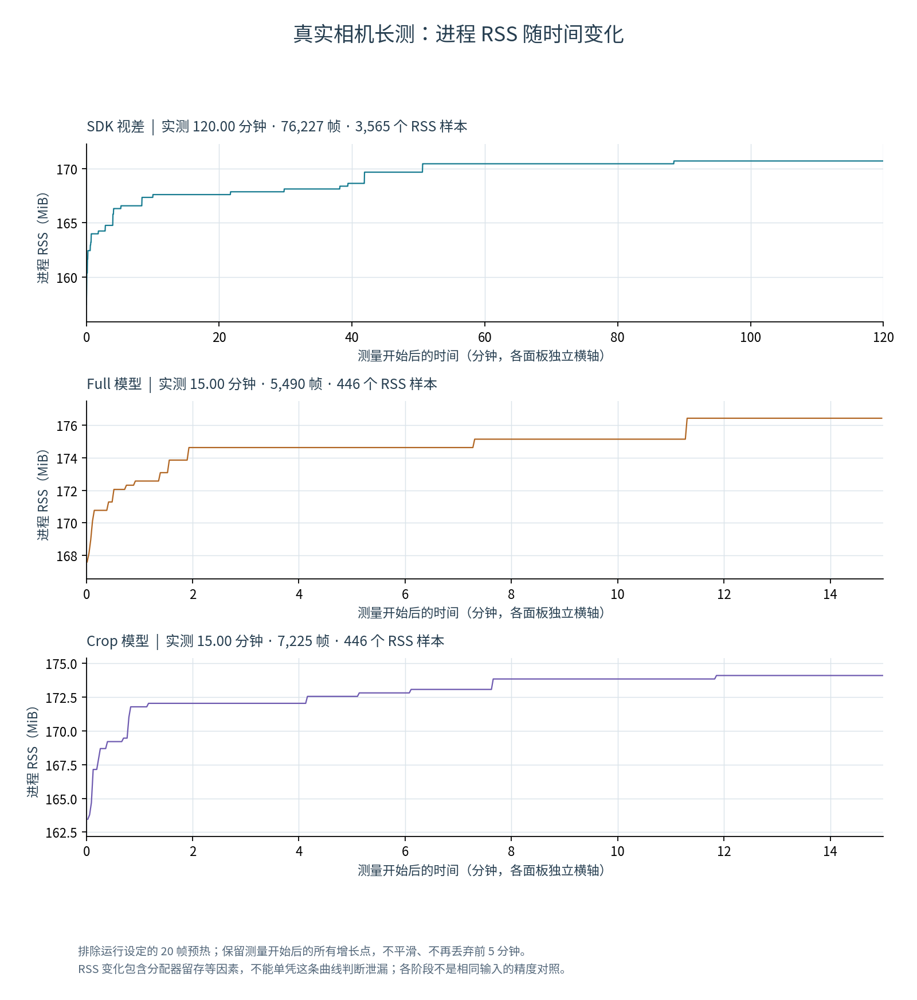

指定验证已有结果；场景覆盖与无GT限制仍保留。
本页只比较原版 6cfe59… 与最终版 44cdd0…；不将中间试验版本当作最终收益。
地图绘图的 OpenCV 并行缩放触发线程追踪。反复创建、销毁工作线程后，追踪数据留在库内累积器中。
RSS 还包含分配器保留的空闲页，不能把 RSS 全部当成泄漏。
局部最近邻放大与 RGB 写出合并，保留像素结果；DAG 线程数按实际任务数设上限。启动入口用可选单实例锁控制争用。
最终只改两个生产 C++ 文件。早期三处缓存试验已回退。
已完成300 轮初始化/销毁对照已给出资源收益；427 帧一致性、三图渲染和真实相机测试分别报告。
无人工 GT，本轮不能宣称模型绝对精度提高。
固定近黑 NV12 单帧（Y均值7.05/255）、固定 capture ID 回放；run_every_n=1，每次真实执行检测/分割。每轮10次调用、共300轮；去掉全局前10次后统计2,990次调用。SDK时间与CPU工时均仅覆盖SDK process API区间，不含相机取图、保存、输入读取、结果采集/校验/释放或初始化/销毁；不是完整整帧统计。
| 指标 | 原版 | 最终新版 | 怎么理解 |
|---|---|---|---|
| SDK API 调用时间 | 77.84 ms | 76.95 ms | 本固定回放下约快 1.1%；不含相机取图、保存及完整整帧流程 |
| 固定回放 SDK API 区间进程 CPU 工时 | 106.96 ms | 83.41 ms | 本固定回放下减少 22.0%；为进程各线程 CPU 时间相加，不是实景整机 CPU 节省比例 |
| 地图任务 | 12.86 ms | 12.10 ms | 包括本轮保留的三图渲染 |
| 末 25 次销毁后的已分配内存净增长 | 35,696 B | 0 B | 识别出的持续增长路径已消除；不是总内存归零 |
| 销毁后驻留线程 | 25 个 | 18 个 | 本测试销毁后少 7 个驻留线程，符合不再创建 OpenCV 并行池；DAG 线程上限另行验证 |
| 末 25 次销毁后的 RSS 净变化 | 0 B | 0 B | 两者尾部均平稳；RSS 单独不能证明无泄漏 |
本固定回放主要收益是减少SDK API区间CPU工时和线程追踪数据滞留；SDK调用壁钟时间提升较小。没有据此承诺所有第三方库都无泄漏。
已完成427 帧算法一致性：427/427。相同输入的严格对照已完成。
已完成三图渲染：1281/1281 张。相同栅格的绘图验证，独立于模型和点云计算。
已完成回充一致性：默认2线程及配置16线程下，新旧flags与x/y/yaw的Float32位均一致；4个进程各100次调用。独立原始记录复核完成。
输入为20张原生640×480 NV12、各循环5轮，不是真实1280×1088 GDC。每进程80/100帧有有效姿态，覆盖16张不同有效输入；无效帧的默认值一致不算成功姿态。首轮处理的线程增长中新版较原版少1/15个；配置2→16时原版增14、新版增0。
已完成真实相机 · SDK 视差：实测 7,200.0 秒，76227 帧。目标 7200 秒；计划不算测试结果。
场景覆盖：nonzero_disparity_and_sampled_input_variation_observed
已完成真实相机 · full 模型：实测 900.1 秒，5490 帧。目标 900 秒；计划不算测试结果。
场景覆盖：nonzero_disparity_and_sampled_input_variation_observed
已完成真实相机 · crop 模型：实测 900.1 秒，7225 帧。目标 900 秒；计划不算测试结果。
场景覆盖：nonzero_disparity_and_sampled_input_variation_observed
CPU“八核口径”是目标native进程各线程CPU之和再除以8，不是整板总CPU。相机SDK视差的内部前/BPU/后处理未观测，显示“—”，不表示0ms。
SDK 2小时整帧实测：无hash/save观察的帧平均 94.09 ms、最大 178.76 ms；包含定时诊断留痕的全部帧最大 1,437.43 ms。12次定时保存，保存本身平均 1,293.95 ms、最大 1,344.73 ms。约1.4秒的整帧峰值来自这些重复的保存操作，不能读成模型推理耗时，也不是仅首帧慢。
12次保存都约1.3秒：实测范围 1,202.41–1,344.73 ms。记录中的12次超过1秒的相机时间戳间隔，逐一紧跟这些保存帧；这是消费者留痕暂停的对应关系，不能据此报硬件采集丢帧率。逐帧对应证据
SDK本次RSS 157.47→170.69 MiB；末约15分钟的446个样本均为170.69 MiB。仅支持本场景观测，不能推广为所有场景无泄漏。整帧字段仍为原始whole_frame_before_metric_flush_ms，不包含最后的指标写出；未过滤原始统计。
metric encode/release与整帧计时有重叠，不能把两个总量直接相加；检测/分割与双目任务也可能并行，分段耗时之和不等于整帧壁钟时间。
Full/Crop仅完成各15分钟观察：去掉测量开始后5分钟，剩余约10分钟的RSS仍分别增加 1.8047 / 1.5469 MiB。两模式不能写成“长期稳定、内存无增长”；仍需更长测试。SDK两小时执行完成、末15分钟RSS平台，也不代表所有模式和场景均无泄漏。
图中保留测量开始后的全部RSS增长点，已排除20帧预热；各模式使用自己的实际时间轴。RSS包含分配器留存等因素，不能单靠RSS判断泄漏。

USB 链路异常有内核证据，板端算法进程仍连续。2026年11月12日12:00:09、13:10:22（北京时间）记录到断开和重新枚举；Host监控出现过读取异常。恢复记录显示原板端任务继续运行，不能写成“全程无异常”。线缆、供电或驱动的根因尚未确定。
板端身份观察：PID 868428，启动tick 122266989，记录boot ID bb34cd59-cca4-49de-a136-284c1f8316c2。约51.9 / 113.9分钟的两次快照中，33个TID及其启动tick相同；这只是两个时点，不能称为完整线程追踪。
USB与进程连续性独立核对 · Host内核记录 · 同一板端任务恢复记录 · 线程身份双快照
内核证据保留了筛选匹配的最新120行，总匹配244行；244不是断连次数。Host墙钟与板端单调时钟不同，未据此声称精确跨时钟因果关系；阶段完成仍按真实完成态单独判断。
地图质量仍需单独核实。SDK两小时地面拟合有76247条拒绝/回退日志；不能仅凭输出结构有效、视差非零或场景亮暗判断地图正确及回退根因。
SDK 相机 smoke005：独立重算已核对文件身份、614 测量帧、CPU/RSS和计时字段；这是证据核对通过，不是长期稳定性或地图质量验收通过。
60.093s/614测量帧仅为短时相机smoke；20帧预热已排除，但不能替代两小时及复杂场景长期稳定性。
RSS在测量样本中由157992增至164344KiB（+6352KiB）；不足300s丢弃窗，无长期尾窗，不得据此宣称内存稳定或判定泄漏。
地面拟合拒绝并回退634条，数量对应20预热+614测量；这是已观察到的地面处理分支覆盖限制，原因未确认，不能将结构valid当作地图质量正确。
8条ret -43、8条ret -1及1条netlink失败均排在Stream stop completed之后；仅证明完整合并流的顺序，无逐行时间戳，不证明严格实际发生时刻或因果。
仅本轮309127B的stdout-tail与全流长度及SHA完全相同，故可计全流17条上述已知错误；后续长测若只有首尾截断，不能据此声称中间时段零错误，须看全流模式计数。
SDK模式由相机SDK提供Q8视差，没有模型双目前/BPU/后3阶段数据；det/seg的BPU提交等待包含软件提交、排队及等待，不是硬件纯执行时间。
本轮没有保存图像/地图样本，没有同步RAW/曝光/增益lux验证或回充验证；SHA变化与输出结构通过不能证明语义/地面结果正确。
身份链是冻结构建、板端stage/preflight、启动路径及11文件回拉SHA，未独立读取运行中/proc的ELF映射内容。
当前 SDK 长测的已保存首帧：室内办公区域的近地视角，近处有大面积纸板/包装物；图像可辨识，不是全黑帧。 NV12 Y 中位数 120、均值 111.84。这是编码亮度数值，不是实际照度。地面拒绝的原因仍未确认。
该帧为后续长测采样，时间戳不同于此前未保存图像的 smoke；不补作 smoke 的逐帧视觉依据。
计划时长和单帧输出结构不作为长期稳定性或地图质量通过的证据。
无人工GT，算法一致性验证不能替代绝对精度评估。
CPU百分比只统计目标native进程的各线程（含相机SDK线程）。单核100%为一核；除以8得到该进程的八核容量占比，不是整块板子的总CPU占用。
相机SDK黑盒视差没有可观测的内部前处理/BPU/后处理分段，必须显示为“—”，不能填0ms。模型的BPU提交/等待含软件开销，不能表述为硬件纯执行时间。
当前板端结果写在/dev/shm的tmpfs中，帧日志、HASH和监控文件持续增长会消耗文件/系统内存。这部分文件占用不等同于native进程堆泄漏，不能仅由MemAvailable下降或Shmem增长判断进程泄漏。
真实相机按SDK、full、crop顺序测试；只有各阶段完成态summary、实际时长和身份链都满足条件才计入完成，运行中的阶段或计划时长不能判通过。
已完成三次smoke的标定：640×544下K与bxf逐数值相同，parameter_source_code均为0；相机模式SDK=2、full/crop=1，按各自输入路线有意区分。此项只核对三次smoke的记录一致性，不能证明物理标定准确；已完成的长测另见独立结论。
定位链路：地图单独运行可复现小额增长；仅检测/分割的尾部接近平稳；堆分配跟踪与对应板端 OpenCV 反汇编显示，地图缩放进入 parallel_for 后创建的追踪 TLS 在终止线程累积器中保留。先前缓存修改没有解决这一路径。
只对地图渲染做局部串行最近邻扩展和通道交换，不使用全局 OpenCV 线程开关，不改变检测、分割、视差、点云或融合数值规则。DAG 线程上限与单实例锁分别控制线程数和协作进程数；锁不影响绕过该入口的其他进程。
CPU 累计工时是进程中所有线程消耗的 CPU 时间相加，不能当成一帧实际等待时间。末 25 次增长为两个端点净差，不是证明每个中间点完全不变。最终版前期 RSS 从约67.21升到82.03 MiB，尾部已平；因此不能写成“全过程内存零增长”。
固定capture ID只使历史模块少做重复帧拷贝，不会跳过DNN；双方run_every_n=1，每次仍提交检测/分割推理。22%是这一固定近黑输入、固定配置下SDK API区间的进程CPU工时改善；真实室内相机长测的进程/整机CPU需另行统计，不能套用该比例。
相同输入的结果一致性证明移植/优化保持行为，不能证明没有人工标注的检测、分割、视差绝对精度。本轮场景以实际保存 RGB 为准；输入像素恒定或视差全零时单列覆盖范围，不自动判为崩溃。
模型阶段应区分前处理、提交/等待 BPU、后处理；provider 的整个 backend 还含打包和解码，不能把整个 backend 字段当作纯 BPU 耗时。
最终 300 轮前后原始统计 · 最终分配器与 RSS 窗口
最终 SDK SHA256：44cdd0aa1d4a4b9a5ca346e05c1a111a825944db1216b4ab4800278ead327c01。公开 C 符号兼容性另见 符号核对。
features/fusion/backend/src/map_render.cpp
更新时间 UTC：2026-11-12T07:55:47.867791+00:00。仅汇总本地证据，不生成交付压缩包。